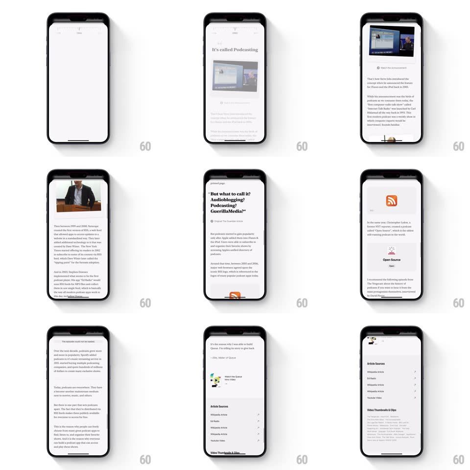

Media
Frame-by-frame

Rebuild this interaction 1:1: Queue's podcast timeline - a horizontal year scrubber at the top snaps to a year, and the rich article below ("It's called Podcasting") slides up and fades in with its images, quotes, and source cards.

Rebuild this interaction 1:1: Queue's podcast timeline - a horizontal year scrubber at the top snaps to a year, and the rich article below ("It's called Podcasting") slides up and fades in with its images, quotes, and source cards.
## Integration
Integration: stack-agnostic spec - springs given as stiffness/damping, timed motions as duration + curve; map every value to your framework and animation library of choice.
## Scene
Top: a horizontal timeline strip of year labels with tick marks. Below: a scrolling article - serif headline ("It's called Podcasting"), embedded images (a presentation photo, an iPod-era screenshot), a pull-quote card, an "Open Source" link card with the RSS icon, and an "Article Sources" list (Wikipedia Article, Ed Radio, Youtube Video rows with icons).
## Motion spec
Pattern: snap scrubber + content swap.
- Drag the timeline: years scroll horizontally with momentum; on release it snaps the nearest year to the center marker (spring ~400/22, 250ms); the centered year grows (scale 1 -> 1.2) and darkens while others sit grey.
- On snap, the article below swaps: the old content slides down and fades (180ms, ease-in) as the new year's article slides up 40px and fades in (300ms, ease-out, 60ms overlap gap).
- Inside the article, elements cascade lightly on entry: headline, then image, then body (50ms steps).
- Article scrolling itself is standard vertical scroll; the timeline stays pinned at top.
- Tapping a far year scrolls the strip to center it, then the same snap + content swap runs.
## Calibration
- Snap is crisp - the strip never rests between years.
- The content swap waits for the snap to start, not finish - total latency under 400ms from release.
## Reduced motion
Content crossfades; the strip snaps without spring overshoot.
## Don't miss
- Source-list rows show small service icons (Wikipedia globe, RSS, YouTube) - they read as citation cards, not plain links.
- The year marker above the strip is a fixed tick - the years move under it, never the reverse.